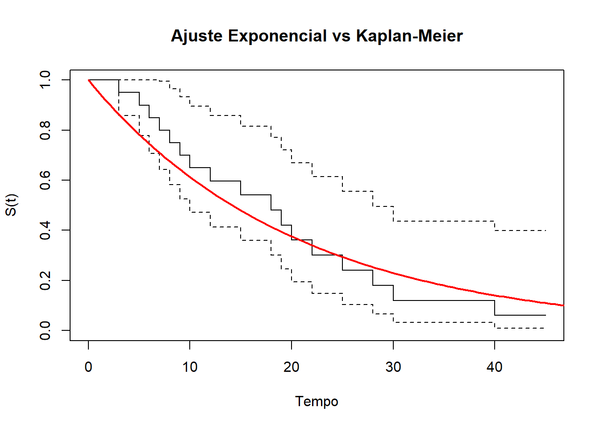
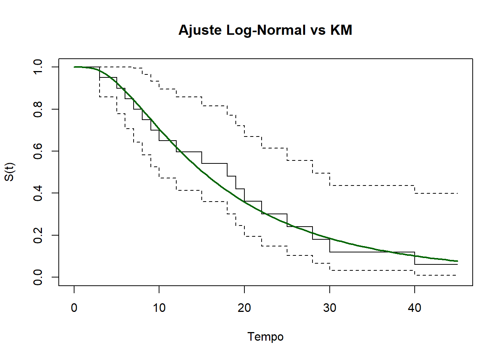
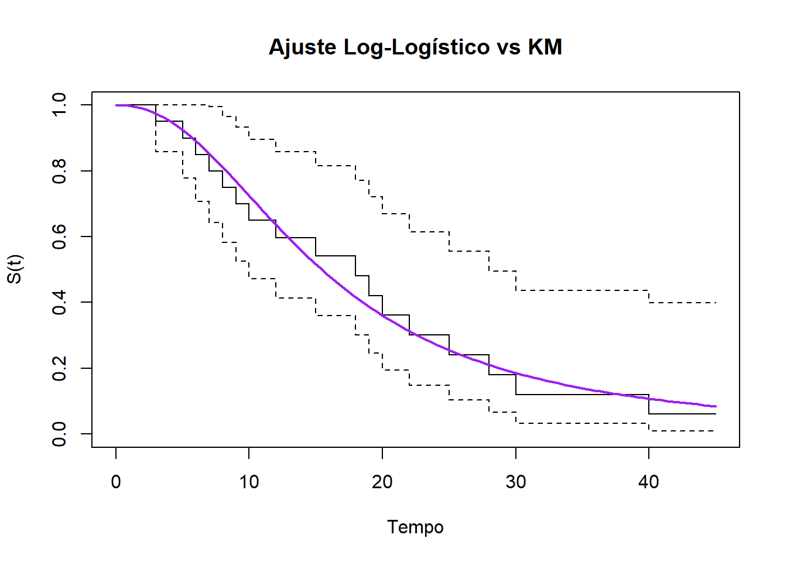
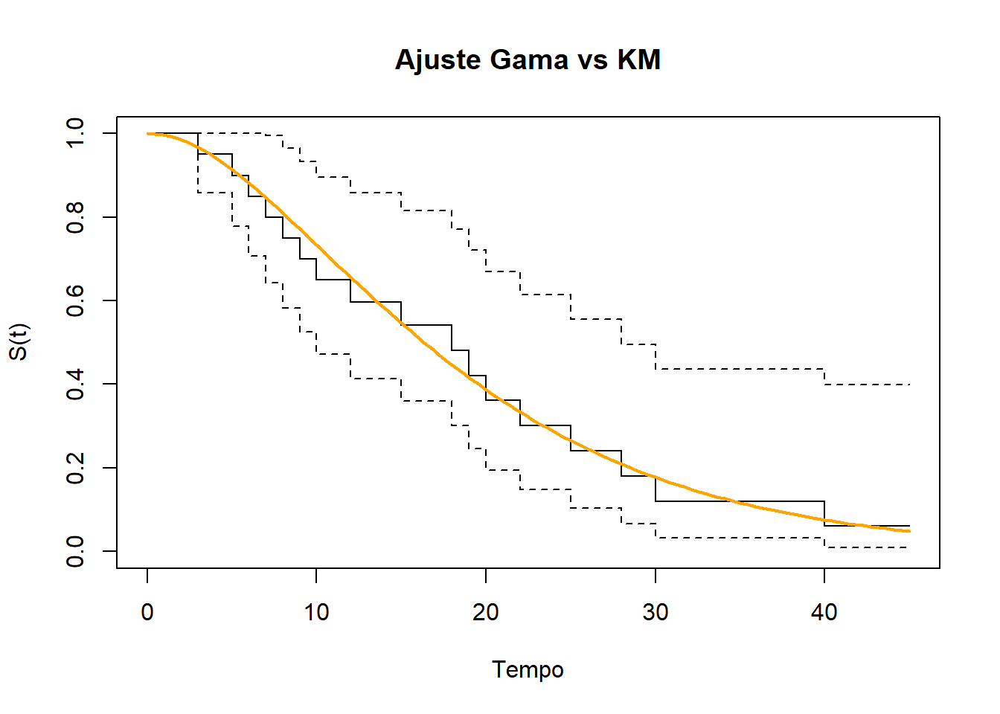
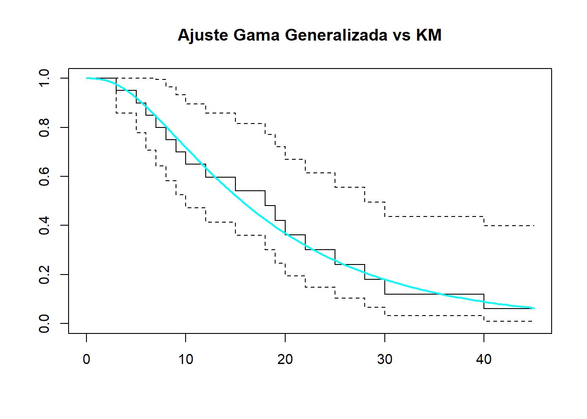

Código
library(survival)
library(flexsurv)
tempos<-c(3,5,6,7,8,9,10,10,12,15,15,18,19,20,22,25,28,30,40,45)
censura<-c(1,1,1,1,1,1,1,0,1,1,0,1,1,1,1,1,1,1,1,0)library(survival)
library(flexsurv)
tempos<-c(3,5,6,7,8,9,10,10,12,15,15,18,19,20,22,25,28,30,40,45)
censura<-c(1,1,1,1,1,1,1,0,1,1,0,1,1,1,1,1,1,1,1,0)S_exp <- function(alpha, t, delta){
log_L <- -sum(delta * log(alpha)) - (1/alpha) * sum(t)
return(-log_L)
}
ajuste <- optimize(f = S_exp, c(0.01, 100), tempos, censura)
ajuste$minimum
[1] 20.41178
$objective
[1] 68.27389modelo_exp <- survreg(Surv(tempos, censura) ~ 1, dist = "exponential")
summary(modelo_exp)
Call:
survreg(formula = Surv(tempos, censura) ~ 1, dist = "exponential")
Value Std. Error z p
(Intercept) 3.016 0.243 12.4 <2e-16
Scale fixed at 1
Exponential distribution
Loglik(model)= -68.3 Loglik(intercept only)= -68.3
Number of Newton-Raphson Iterations: 4
n= 20 # usando a hessiana ao trocar pelo optim
fit_exp_hessian <- optim(par = 10, fn = S_exp, t = tempos, delta = censura,
method = "BFGS", hessian = TRUE)
#IF
I_obs <- fit_exp_hessian$hessian
#Variancia
variancia <- solve(I_obs)
se_alpha <- sqrt(variancia) # Erro Padrãoalpha_hat <- fit_exp_hessian$par
z <- qnorm(0.975) # 1.96
ic_inf <- alpha_hat - z * se_alpha
ic_sup <- alpha_hat + z * se_alpha
cat("IC 95% para Alpha: [", ic_inf, ";", ic_sup, "]\n")IC 95% para Alpha: [ 10.70879 ; 30.11414 ]logL_max <- -fit_exp_hessian$value
n <- length(tempos)
k <- 1
# Critérios de Seleção
aic_exp <- 2*k - 2*logL_max
bic_exp <- k*log(n) - 2*logL_max
hq_exp <- 2*k * log(log(n)) - 2*logL_max
cat("AIC:", aic_exp, "| BIC:", bic_exp, "| HQ:", hq_exp)AIC: 138.5478 | BIC: 139.5435 | HQ: 138.7422# KM
km <- survfit(Surv(tempos, censura) ~ 1)
# Curva Exponencial
t_grid <- seq(0, 50, length.out = 100)
st_teorico <- exp(-t_grid / alpha_hat)
plot(km, main = "Ajuste Exponencial vs Kaplan-Meier",
xlab = "Tempo",
ylab = "S(t)")
lines(t_grid, st_teorico, col = "red", lwd = 2)
S_weib <- function(theta, t, delta){
alpha <- theta[1]
gamma <- theta[2]
r <- sum(delta) #soma de todos as falhas
Log_L <- r*log(gamma)-(r*gamma*log(alpha))+(gamma -1)*sum(delta*log(t))-(alpha^(-gamma))*sum(t^gamma)
if(!is.finite(Log_L)) return(1e10) #garante o tempo positivo apenas
return(-Log_L)
}
#?optim()
resultado <- optim(par = c(1, 1), S_weib, t = tempos, delta = censura, method = "BFGS")
resultado $par
[1] 21.334902 1.543351
$value
[1] 66.13336
$counts
function gradient
44 23
$convergence
[1] 0
$message
NULLmodelo_weib <- survreg(Surv(tempos, censura) ~ 1, dist = "weibull")
summary(modelo_weib)
Call:
survreg(formula = Surv(tempos, censura) ~ 1, dist = "weibull")
Value Std. Error z p
(Intercept) 3.061 0.160 19.1 <2e-16
Log(scale) -0.434 0.189 -2.3 0.022
Scale= 0.648
Weibull distribution
Loglik(model)= -66.1 Loglik(intercept only)= -66.1
Number of Newton-Raphson Iterations: 6
n= 20 # hessian = TRUE
resultado <- optim(par = c(1, 1), S_weib, t = tempos, delta = censura,
method = "BFGS", hessian = TRUE)
var_covar <- solve(resultado$hessian)
erros_padrao <- sqrt(diag(var_covar))
# 95% para os dois parâmetros
z <- qnorm(0.975)
ic_alpha <- resultado$par[1] + c(-1, 1) * z * erros_padrao[1]
ic_gamma <- resultado$par[2] + c(-1, 1) * z * erros_padrao[2]# Variáveis
n <- length(tempos)
k <- 2
logL <- -resultado$value
# Cálculos
aic_weibull <- 2 * k - 2 * logL
bic_weibull <- k * log(n) - 2 * logL
hq_weibull <- 2 * k * log(log(n)) - 2 * logL
cat("AIC Weibull:", aic_weibull, "\n")AIC Weibull: 136.2667 cat("BIC Weibull:", bic_weibull, "\n")BIC Weibull: 138.2582 cat("HQ Weibull:", hq_weibull)HQ Weibull: 136.6555S_lognorm <- function(theta, t, delta) {
mu <- theta[1]
sigma <- theta[2]
log_S <- plnorm(t, meanlog = mu, sdlog = sigma, lower.tail = FALSE, log.p = TRUE)
log_f <- -0.5*log(2*pi) - log(t) - log(sigma) - (1/(2*sigma^2)) * (log(t) - mu)^2
L_LOG <- sum(delta * log_f + (1 - delta) * log_S)
return(-L_LOG)
}o_mu <- mean(log(tempos))
o_sigma <- sd(log(tempos))
fit_ln <- optim(par = c(o_mu, o_sigma), fn = S_lognorm,t = tempos,delta = censura, method = "BFGS"
)
fit_ln$par
[1] 2.7171735 0.7648411
$value
[1] 65.7399
$counts
function gradient
14 6
$convergence
[1] 0
$message
NULLmodelo_logN <- survreg(Surv(tempos, censura) ~ 1, dist = "lognormal")
summary(modelo_logN)
Call:
survreg(formula = Surv(tempos, censura) ~ 1, dist = "lognormal")
Value Std. Error z p
(Intercept) 2.717 0.176 15.42 <2e-16
Log(scale) -0.268 0.174 -1.54 0.12
Scale= 0.765
Log Normal distribution
Loglik(model)= -65.7 Loglik(intercept only)= -65.7
Number of Newton-Raphson Iterations: 6
n= 20 fit_ln <- optim(par = c(mean(log(tempos)), sd(log(tempos))), fn = S_lognorm,
t = tempos,
delta = censura,
method = "BFGS",
hessian = TRUE
)
# Informação de Fisher Observada (Matriz 2x2: mu e sigma)
If_obs <- fit_ln$hessian
# Matriz de variância-covariância (Inversa da Hessiana)
var_covar_ln <- solve(If_obs)
# Erros Padrão
se_ln <- sqrt(diag(var_covar_ln))z <- qnorm(0.975) # Para 95% de confiança
# IC para Mu
ic_mu <- c(fit_ln$par[1] - z * se_ln[1], fit_ln$par[1] + z * se_ln[1])
# IC para Sigma
ic_sigma <- c(fit_ln$par[2] - z * se_ln[2], fit_ln$par[2] + z * se_ln[2])
cat("IC 95% Mu: [", ic_mu, "]\n")IC 95% Mu: [ 2.371732 3.062615 ]cat("IC 95% Sigma: [", ic_sigma, "]\n")IC 95% Sigma: [ 0.5046711 1.025011 ]n <- length(tempos)
k <- 2
logL_ln <- -fit_ln$value # Log-verossimilhança máxima
aic_ln <- 2*k - 2*logL_ln
bic_ln <- k*log(n) - 2*logL_ln
hq_ln <- 2*k*log(log(n)) - 2*logL_ln
cat("AIC:", aic_ln, "| BIC:", bic_ln, "| HQ:", hq_ln)AIC: 135.4798 | BIC: 137.4713 | HQ: 135.8686#km <- survfit(Surv(tempos, censura) ~ 1) # já declarado
t_grid <- seq(0, max(tempos), length.out = 100)
s_teorico_ln <- plnorm(t_grid, meanlog = fit_ln$par[1], sdlog = fit_ln$par[2], lower.tail = FALSE)
plot(km,
conf.int = TRUE,
col = "black",
lty = c(1, 2, 2),
main = "Ajuste Log-Normal vs KM",
xlab = "Tempo",
ylab = "S(t)")
lines(t_grid, s_teorico_ln, col = "darkgreen", lwd = 2)
S_loglogistica <- function(theta, t, delta) {
alpha <- exp(theta[1])
gamma <- exp(theta[2])
log_f <- log(gamma) - (gamma * log(alpha)) + (gamma - 1) * log(t) - 2 * log(1 + (t/alpha)^gamma)
log_S <- -log(1 + (t/alpha)^gamma)
LOG_L <- sum(delta * log_f + (1 - delta) * log_S)
return(-LOG_L)
}
# Chute inicial (log da média dos tempos e log de 1)
inicio <- c(log(mean(tempos)), 0)
fit_ll <- optim(par = inicio, fn = S_loglogistica, t = tempos, delta = censura, method = "BFGS")
fit_ll$par
[1] 2.7373688 0.7993457
$value
[1] 66.03053
$counts
function gradient
21 7
$convergence
[1] 0
$message
NULLmodelo_LL <- survreg(Surv(tempos, censura) ~ 1, dist = "loglogistic")
modelo_LLCall:
survreg(formula = Surv(tempos, censura) ~ 1, dist = "loglogistic")
Coefficients:
(Intercept)
2.737415
Scale= 0.4496653
Loglik(model)= -66 Loglik(intercept only)= -66
n= 20 # Rodando com Hessiana
fit_ll <- optim(par = inicio, fn = S_loglogistica, t = tempos,
delta = censura, method = "BFGS", hessian = TRUE)
# Variância-Covariância e Erro Padrão (na escala log)
var_covar_ll <- solve(fit_ll$hessian)
se_ll <- sqrt(diag(var_covar_ll))
# IC 95% para os parâmetros (escala original usando exp)
z <- qnorm(0.975)
ic_alpha_ll <- exp(fit_ll$par[1] + c(-1, 1) * z * se_ll[1])
ic_gamma_ll <- exp(fit_ll$par[2] + c(-1, 1) * z * se_ll[2])
cat("IC Alpha:", ic_alpha_ll, "\n")IC Alpha: 10.85383 21.98191 cat("IC Gamma:", ic_gamma_ll)IC Gamma: 1.509642 3.27664n <- length(tempos)
k <- 2
logL_ll <- -fit_ll$value
aic_ll <- 2*k - 2*logL_ll
bic_ll <- k*log(n) - 2*logL_ll
hq_ll <- 2*k*log(log(n)) - 2*logL_ll
cat("AIC:", aic_ll, "| BIC:", bic_ll, "| HQ:", hq_ll)AIC: 136.0611 | BIC: 138.0525 | HQ: 136.4498alpha_ll <- exp(fit_ll$par[1])
gamma_ll <- exp(fit_ll$par[2])
# Sobrevivência Teórica: S(t) = 1 / (1 + (t/alpha)^gamma)
st_loglogistica <- 1 / (1 + (t_grid / alpha_ll)^gamma_ll)
plot(km, conf.int = TRUE, col = "black", lty = c(1, 2, 2),
main = "Ajuste Log-Logístico vs KM", xlab = "Tempo", ylab = "S(t)")
lines(t_grid, st_loglogistica, col = "purple", lwd = 2)
S_gama <- function(theta, t, delta) {
shape <- exp(theta[1])
scale <- exp(theta[2])
log_f <- dgamma(t, shape = shape, scale = scale, log = TRUE)
log_S <- pgamma(t, shape = shape, scale = scale, lower.tail = FALSE, log.p = TRUE)
logl <- sum(delta * log_f + (1 - delta) * log_S)
return(-logl)
}
p <- log(mean(tempos))
fit_g <- optim(par = c(0, p), fn = S_gama, t = tempos, delta = censura, method = "BFGS")
fit_g$par
[1] 0.7626296 2.1937980
$value
[1] 65.84754
$counts
function gradient
30 9
$convergence
[1] 0
$message
NULLmodelo_gama <- flexsurvreg(Surv(tempos, censura) ~ 1, dist = "gamma")
modelo_gamaCall:
flexsurvreg(formula = Surv(tempos, censura) ~ 1, dist = "gamma")
Estimates:
est L95% U95% se
shape 2.1439 1.1580 3.9692 0.6737
rate 0.1115 0.0540 0.2303 0.0413
N = 20, Events: 17, Censored: 3
Total time at risk: 347
Log-likelihood = -65.84754, df = 2
AIC = 135.6951fit_g <- optim(par = c(0, p), fn = S_gama, t = tempos,
delta = censura, method = "BFGS", hessian = TRUE)
# Inversa da Hessiana (Matriz de Variância-Covariância no espaço log)
var_covar_g <- solve(fit_g$hessian)
se_g <- sqrt(diag(var_covar_g))
# Intervalos de Confiança (Transformando de volta para a escala original)
z <- qnorm(0.975)
ic_shape_g <- exp(fit_g$par[1] + c(-1, 1) * z * se_g[1])
ic_scale_g <- exp(fit_g$par[2] + c(-1, 1) * z * se_g[2])
cat("IC Shape:", ic_shape_g, "\n")IC Shape: 1.158 3.9692 cat("IC Scale:", ic_scale_g)IC Scale: 4.341715 18.5288n <- length(tempos)
k <- 2
logL_g <- -fit_g$value
aic_g <- 2*k - 2*logL_g
bic_g <- k*log(n) - 2*logL_g
hq_g <- 2*k*log(log(n)) - 2*logL_g
cat("AIC:", aic_g, "| BIC:", bic_g, "| HQ:", hq_g)AIC: 135.6951 | BIC: 137.6865 | HQ: 136.0838shape_hat <- exp(fit_g$par[1])
scale_hat <- exp(fit_g$par[2])
# Sobrevivência Teórica da Gama
st_gama <- pgamma(t_grid, shape = shape_hat, scale = scale_hat, lower.tail = FALSE)
plot(km, conf.int = TRUE, col = "black", lty = c(1, 2, 2),
main = "Ajuste Gama vs KM", xlab = "Tempo", ylab = "S(t)")
lines(t_grid, st_gama, col = "orange", lwd = 2)
S_gamaG <- function(theta, t, delta) {
alpha <- exp(theta[1])
gamma <- exp(theta[2])
s <- exp(theta[3])
log_f <- log(gamma)-lgamma(s)-(gamma*s*log(alpha))+(gamma * s - 1)*log(t)-(t / alpha)^gamma
log_S <- pgamma((t / alpha)^gamma, shape = s, lower.tail = FALSE, log.p = TRUE)
logl <- sum(delta * log_f + (1 - delta) * log_S)
if(!is.finite(logl)) return(1e10)
return(-logl)
}
i <- c(log(mean(tempos)), 0, 0)
resultado_gg <- optim(par = i, fn = S_gamaG, t = tempos, delta = censura, method = "BFGS")
resultado_gg$par
[1] -2.8700735 -0.8786525 2.3651648
$value
[1] 65.6936
$counts
function gradient
202 100
$convergence
[1] 1
$message
NULLmodelo_GG <- flexsurvreg(Surv(tempos, censura) ~ 1, dist = "gengamma")
modelo_GGCall:
flexsurvreg(formula = Surv(tempos, censura) ~ 1, dist = "gengamma")
Estimates:
est L95% U95% se
mu 2.805 2.168 3.442 0.325
sigma 0.743 0.498 1.110 0.152
Q 0.247 -1.291 1.786 0.785
N = 20, Events: 17, Censored: 3
Total time at risk: 347
Log-likelihood = -65.69074, df = 3
AIC = 137.3815resultado_gg <- optim(par = i, fn = S_gamaG, t = tempos,
delta = censura, method = "BFGS", hessian = TRUE)
# Variância-Covariância (espaço log)
var_covar_gg <- solve(resultado_gg$hessian)
se_gg <- sqrt(diag(var_covar_gg))
# IC 95% agora para os três parâmetros
z <- qnorm(0.975)
ic_alpha_gg <- exp(resultado_gg$par[1] + c(-1, 1) * z * se_gg[1])
ic_gamma_gg <- exp(resultado_gg$par[2] + c(-1, 1) * z * se_gg[2])
ic_s_gg <- exp(resultado_gg$par[3] + c(-1, 1) * z * se_gg[3])n <- length(tempos)
k <- 3
logL_gg <- -resultado_gg$value
aic_gg <- 2*k - 2*logL_gg
bic_gg <- k*log(n) - 2*logL_gg
hq_gg <- 2*k*log(log(n)) - 2*logL_gg
cat("AIC GG:", aic_gg, "| BIC GG:", bic_gg, "| HQ GG:", hq_gg)AIC GG: 137.3872 | BIC GG: 140.3744 | HQ GG: 137.9703# Parâmetros convertidos
a_gg <- exp(resultado_gg$par[1])
g_gg <- exp(resultado_gg$par[2])
s_gg <- exp(resultado_gg$par[3])
# Sobrevivência Teórica GG
st_gg <- pgamma((t_grid / a_gg)^g_gg, shape = s_gg, lower.tail = FALSE)
plot(km, conf.int = TRUE, main = "Ajuste Gama Generalizada vs KM")
lines(t_grid, st_gg, col = "cyan", lwd = 2)